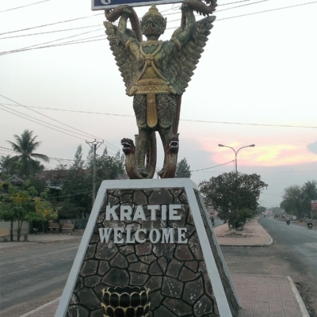

ការពិពណ៏នាអំពី ខេត្តនីមួយៗនៅក្នងប្រទេសកម្ពុជា
ទំព័រដើម
តាកែវ
ភ្នំពេញ
កែប
ព្រះសីហនុ
ស្វាយរៀង
កំពង់ធំ
បាត់ដំបង
ពោធ៏សាត់
សៀមរាប
រតនគីរី
មណ្ឌលគីរី
ក្រចេះ
ត្បូងឃ្មុំ
កំពង់ចាម
ព្រៃវែង
កណ្តាល
ឧត្តរមានជ័យ
កំពង់ឆ្នាំង
កំពង់ស្ពឺ
បន្ទាយមានជ័យ
កោះកុង
ប៉ៃលិន
កំពត
ស្ទឹងត្រែង
ព្រះវិហារ
ទំនាក់ទំនង
ខេត្តក្រចេះ

ព័ត៌មានសង្ខេបអំពីខេត្តក្រចេះ
> ក្រចេះ (អ.ស.អ.: [krɑˈceh]) គឺជាខេត្តមួយក្នុងប្រទេសកម្ពុជា។ ក្រុងរបស់ខេត្តមានឈ្មោះថាក្រចេះដែលជាទីរួមខេត្ត។ ក្រចេះគឺជាខេត្តតូចមួយតែគួរឲ្យចាប់ចិត្តសិ្ថតនៅប៉ែកឦសាននៃរាជធានីភំ្នពេញ។ វាមានព្រំប្រទល់ជាប់នឹងស្ទឹងត្រែងនៅភាគខាងជើង មណ្ឌលគីរីនៅខាងកើត កំពង់ធំ និង កំពង់ចាមនៅខាងលិច ហើយត្បូងឃ្មុំ និងវៀតណាមនៅខាងត្បូង។ មានផ្លូវគមនាគមន៍តភ្ជាប់ ៣ខែ្ស គឺផ្លូវជាតិលេខ៧ ចម្ងាយ ៣៤0 គីឡូម៉ែត្រ ផ្លូវលំក្រាលក្រួសក្រហម កាត់ស្រុកតំបែរ-ស្រុកឆ្លូង មួយខែ្សនិងតាមមាត់ទនេ្លមួយខែ្សទៀត មានចម្ងាយប្រហាក់ប្រហែល នឹងផ្លូវទឹកទនេ្លមេគង្គ ២២០ គីឡូម៉ែត្រ។ ការធ្វើដំណើរ ទោះបីតាមរថយន្តកី្តតាមកាណូតលឿនកី្តមិនលើសពី៥ម៉ោងទេ ពិតជាបានមកដល់ក្រុងក្រចេះដោយសុវតិ្ថភាព។ ខេត្តក្រចេះ សម្បូរដោយធនធានធម្មជាតិ នៅលើដី មានព្រៃព្រឹក្សា វាលស្រែ ដីមានជីជាតិ នៅក្នុងទឹកសម្បូរដោយត្រី ពិសេសមេពូជត្រីធំៗ នៅតាមអន្លង់មេគង្គក្នុងស្រុកសំបូរ និងមានសត្វផ្សោតទឹកសាប ដែលទាក់ទាញភ្ញៀវ ទេសចរជាតិ និងអន្តរជាតិ
> ក្រៅពីនេះ នៅមានទេសភាពដ៏ស្រស់សោភ័ណ ថៃ្ងលិចគងព្រៃកោះទ្រង់ដ៏ស្អាត គួរឱ្យចង់ទស្សនាទៀតផង។ ទាំងអស់ដែលបានបរិយាយចោះៗ ខាងលើ ធ្វើឲ្យខេត្តក្រចេះមានកំណើនភ្ញៀវទេសចរណ៍ទេ្វដងក្នុង មួយឆ្នាំៗ។ កត្តាទាំងនេះបាន ចង្អុលឲ្យខេត្តក្រចេះជ្រើសរើសយក វិស័យទេសចរណ៍ជាវិស័យអាទិភាពក្នុងកិច្ចការស្តារ និងអភិវឌ្ឍសេដ្ឋកិច្ច ទោះតាមរយៈចំណូលដោយផ្ទាល់កី្ត ដោយប្រយោលកី្ត ក៏វិស័យទេសចរណ៍បានកំពុងជំរុញយ៉ាងស្វាហាប់ ដើម្បីធ្វើជាឧបករណ៍វិជ្ជមានមួយក្នុងការកាត់បន្ថយភាពក្រីក្រ បង្កើនការងារសម្រាប់ប្រជាពលរដ្ឋជាង ២៨ម៉ឺននាក់ នៅខេត្តក្រចេះ។[២]។
> ខេត្តក្រចេះស្ថិតនៅតំបន់ខ្ពង់រាបប៉ែកឦសាននៃ ប្រទេសកម្ពុជា សំបូរទៅដោយសម្បត្តិវប្បធម៌ប្រវត្តិសាស្រ្ត និងធម្មជាតិជាច្រើន ដែលទាក់ទាញចំណាប់អារម្មណ៍ ភ្ញៀវជាតិ និងអន្តរជាតិអោយមក ទស្សនាកំសាន្ត និងសិក្សាស្រាវជ្រាវ ដើម្បីបាន ឃើញបានយល់ និងបានស្គាល់ពីទិដ្ឋភាពពិតនៃ សម្បតិ្តទាំងនោះដោយខានពុំបាន។ ក្រៅអំពី លទ្ធភាពខាងផែ្នកទេសចរណ៍ខេត្តក្រចេះអាចផ្តល់ លទ្ធភាពលើវិស័យផេ្សងៗទៀតជាច្រើន ដូចជាវិស័យសេដ្ឋកិច្ច សង្គមកិច្ច វប្បធម៌ និងអរិយធម៌ ដែលជាកេរ្តិ៍ដំណែលពីដូនតារបស់ខែ្មរបានបន្សល់ទុកអោយយ៉ាងច្រើនសន្ធឹកសន្ធាប់ដល់កូនចៅជំនាន់ក្រោយផងដែរ។ ក្រចេះក្រុងជាទីប្រជុំជនតូចប៉ុនែ្តស្អាតលំអទៅដោយអាគារស្ថាបនាតាំងពីទសវត្ស ១៩៤០-១៩៥០ និង១៩៦០ ដែលមាន រចនាបថល្អប្រណិត។ នៅគ្រប់ទីកនែ្លងក្នុងខេត្តប្រកបដោយ ធម្មជាតិពិតដ៏សែនមនោរម្យ នៅខាងមុខមានដងទនេ្ល និងកោះនៅខាងក្រោយមានបឹងដ៏ធំ ដែលមានជំនោរបរិសុទ្ធ។
> ខេត្តក្រចេះ មានស្រុកចំនួន ៦ស្រុក :
- ស្រុកក្រចេះ
- ស្រុកសំបូរ
- ស្រុកជើងប្រាំ
- ស្រុកព្រែកប្រាសាទ
- ស្រុកស្នួល
- ស្រុកចិត្របុរី